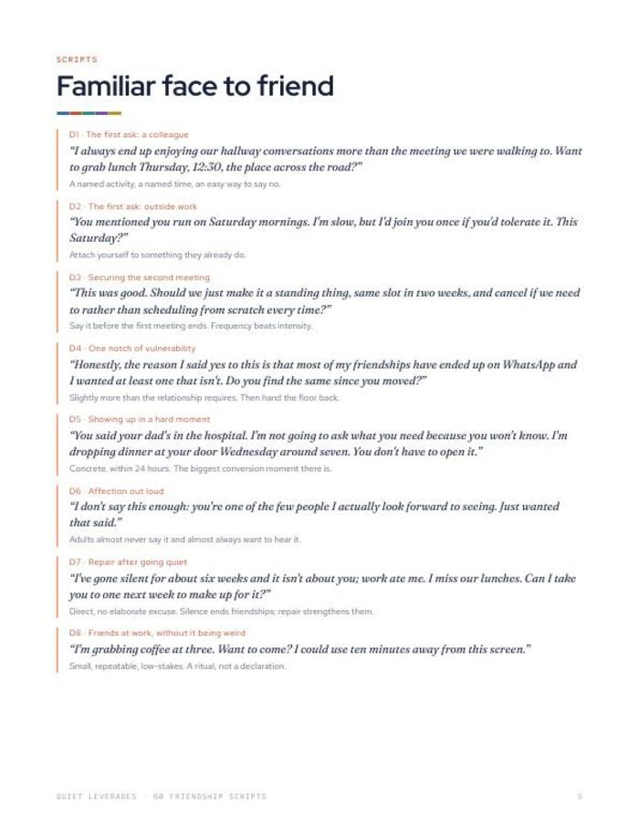
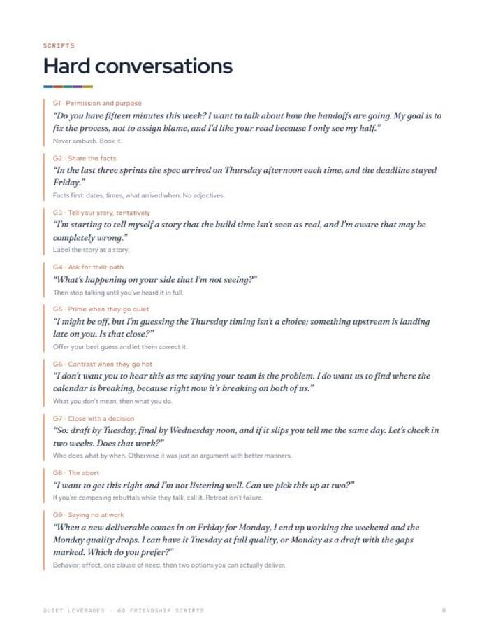

You liked someone at that event, and the next move was a blank.
Sixty ready-to-adapt lines for eight moments, from the first minute to hard conversations, each with when to use it.
Instant download. Print it or use it on a tablet with any PDF app. Prints fine on A4 at 'fit to page'.

The exact words
Sixty lines you can send as a text or say face to face. Adapt the brackets, keep the shape.
Eight moments
The first minute, familiar face to friend, keeping it going, hard conversations, hosting and more.
When to use each
Every script comes with a short note on the situation it fits.
scripts
moments covered
of adults aged 30-44 are frequently or always lonely, the highest of any age group. Many people in that group are not short of kind intent. They are short of the sentence to start with.
Harvard Making Caring Common, 2024What you leave with
A first line when you have none
Scripts for the first minute, written to be said by someone who feels awkward.
A way from acquaintance to friend
Lines for the specific ask, the second meeting and the standing plan.
Words for the hard moments
Lines for saying no, asking for a different path and closing a tense talk with a decision.
Plain, warm wording
Short enough to send as a text. Warm enough to say out loud.
Sixty lines, grouped by the moment you are in
Find the moment, adapt the brackets so it sounds like you, and send it.
- Sixty scripts across eight moments.
- The first minute, familiar face to friend, keeping it going.
- Hard conversations and hosting.
- When to use it. A short note under every script.
- Printable PDF. US Letter, prints on A4 at 'fit to page'.


Find it, adapt it, send it
Find the moment
Look for the section that matches where you are right now.
Adapt the brackets
Change the wording until it sounds like you.
Send it
As a text or face to face. Most people are glad to be asked.
A good fit if you know what you want to say, but not how
Use this if
- You want to turn a familiar face into a friend.
- You have been meaning to reconnect with someone and do not know how to open.
- You want wording for a no, a boundary or a tense talk.
Skip it if
- You want a daily programme. See The 30-Day Friendship Practice.
- You are looking for therapy or clinical support. This is a wording tool.
- You want a motivational read. This is a page of lines to use.
Why it is hard to start, in numbers
of Americans have no close friends, up from 3% in 1990.
Survey Center on American Life, 2021In-person time with friends fell from about 60 minutes a day in 2003 to about 20 in 2020.
American Time Use Survey dataof time together to move from acquaintance to casual friend; about 90 to friend, 200+ to close friend.
Jeffrey Hall, University of Kansas, 2018What readers say about 60 Friendship Scripts
Keep sixty openers where you can reach them
Print it, or keep the PDF on your phone for the moment you need it.
- 60 scripts across 8 moments
- When to use each one
- Plain wording for a text or face to face
Before you decide
What format is it?
A printable PDF, US Letter. It prints fine on A4 at 'fit to page'.
Can I use it on my phone?
Yes. Any PDF app will open it, so the scripts are with you when you need one.
Who is it for?
Adults making or keeping friends, at work, in a new city or after a gap. The scripts work as a text or face to face.
How is this different from The 30-Day Friendship Practice?
This is the scripts only. The Practice adds a guided drill each day for thirty days, weekly scorecards and a tracker.
Is it therapy or advice?
No. It is a wording tool. General education only; not medical, psychological or other professional advice.
The next step after this one


Have the sentence ready.
Sixty lines for the moments that decide whether an acquaintance becomes a friend.
Get the scripts for $9One-time $9 on Gumroad. Instant download.